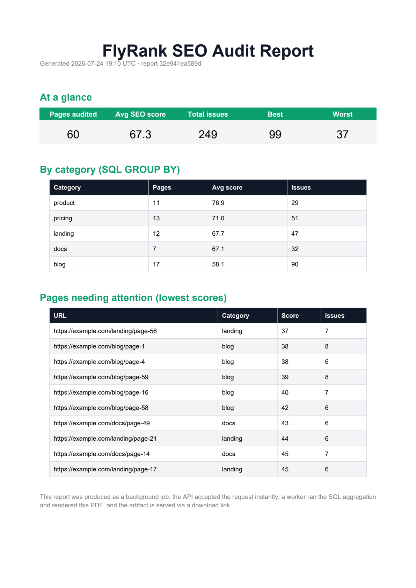

PDF · SQL aggregation · artifact download
PDF Report Generator
Accept a report job, aggregate from SQL, render a PDF in the background, and hand back a downloadable artifact link.

Surface
| Method | Path | Meaning |
|---|---|---|
POST | /reports | Queue report job |
GET | /reports/{id} | Job status |
GET | /reports/{id}/download | PDF artifact |
GET | /docs | Swagger surface |